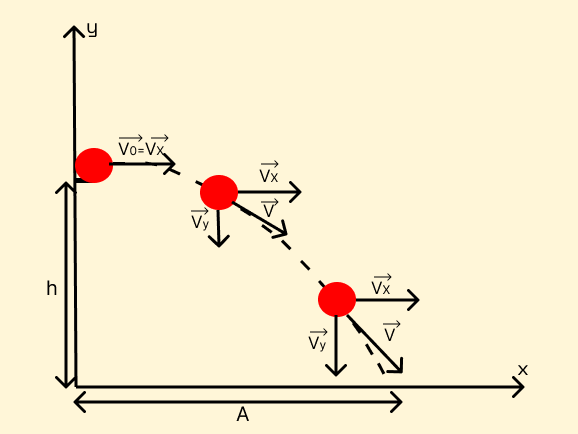

Como dito na introdução, o Lançamento Horizontal é a situação aonde um corpo inicia sua trajetória com uma velocidade horizontal e no instante seguinte cai sob efeito da gravidade.
⚽
Nesse tipo de lançamento, podemos observar dois movimentos simultaneamente, horizontal descrito pelo (MRU) e de queda livre descrito pelo (MRUV). Logo, as fórmulas que usamos, além das de vetores, não são novidade, pois já fomos preparados na introdução deste site.
Em cada ponto da trajetória a velocidade é resultado da soma vetorial entre as componentes horizontal(constante) e vertical(variada).
Como podemos observar na imagem, V₀ é igual à Vx, pois neste instante Vy é nulo e seu módulo aumenta conforme o tempo passa.
Ao fazermos nossa análise do lançamento, podemos considerar o eixo y crescendo para cima ou para baixo, neste site adotaremos o primeiro modo. Logo, em nossos cálculos, a gravidade será negativa.
Nos cálculos do movimento que ocorre horizontalmente usaremos as seguintes fórmulas:
- A=VxT
- Vx=V₀
Verticalmente:
- Vy²=-2Gy
- Vy=-GT
- h=GT²/2
- Equivalências:
- Vy=V
- Vx=V
- G=a
- Y=X=h=s=d=A
| Lançamento Horizontal | Lançamento Oblíquo | Vetores | |
|---|---|---|---|
| MRU | X=X₀+VxT | A=VxT | - |
| MRUV | Vy²=-2G▲y | Vy²=V₀²-2G▲y | - |
| Vy=-GT | Vy=V₀y-GT | - | |
| Y=Y₀-GT²/2 | Y=V₀yT-GT²/2 | - | |
| Soma | - | - | Vs²=A²+B²+2ABcosΘ |
| Decomposição | - | - | Vy=VsenΘ |
| - | - | Vx=V₀cosΘ |